Една история, която още се пише.
Една линия, която не се прекъсва. Точно като нас.
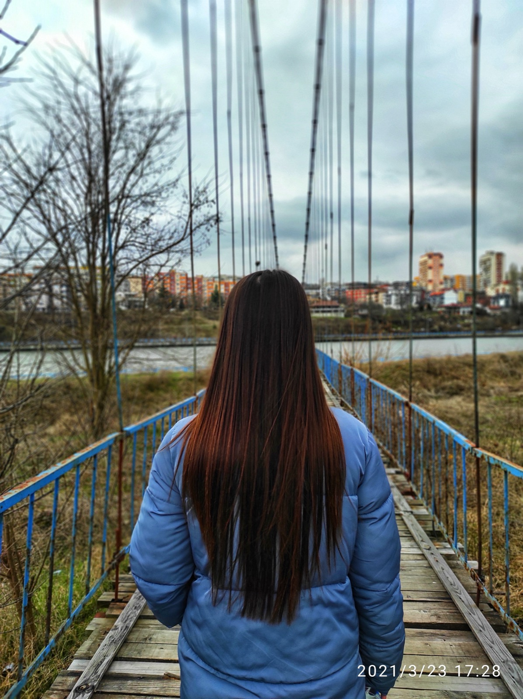
Помня безгрижните разходки и разговорите, които нямаха край. Без уговорки, без обещания, без заричания. Тогава дори не подозирахме, че десет години по-късно ще празнуваме това.
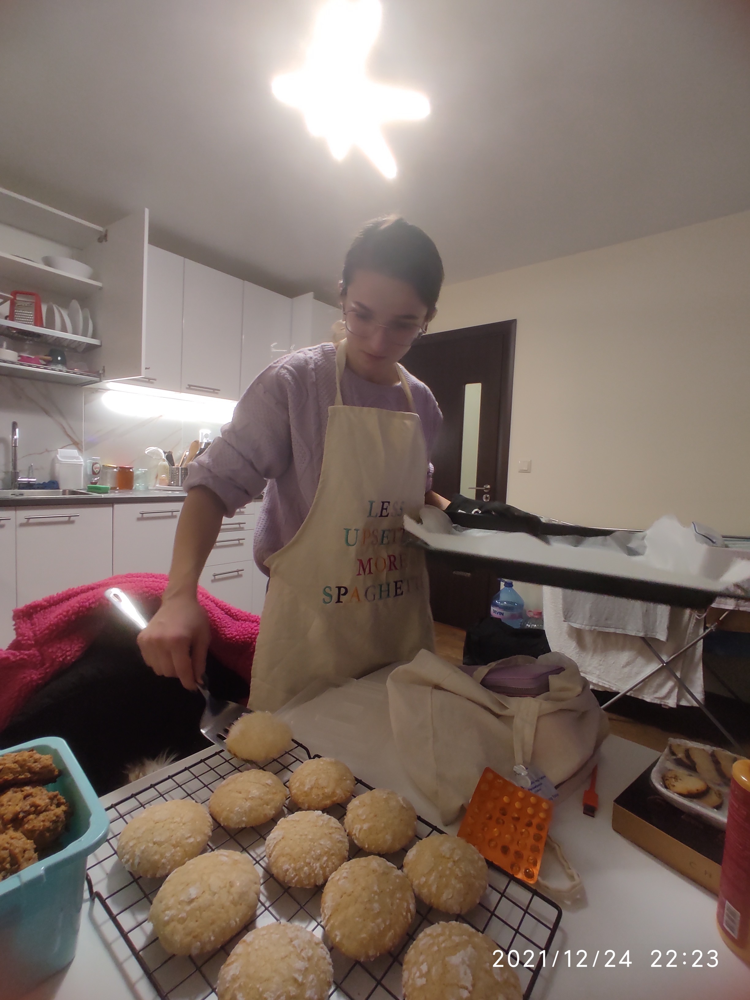
Ти ми показа нещо рядко и ценно. Грижа, поднесена с внимание и с много, много любов.
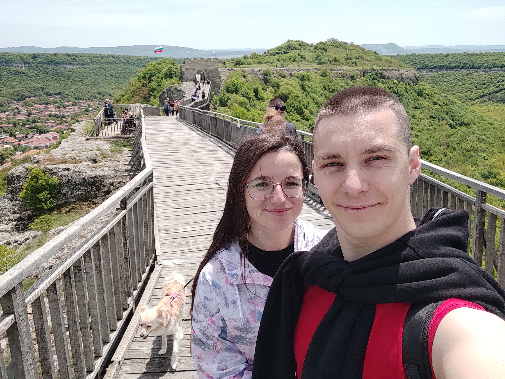
С теб събрах най-ценните си мигове. Обиколихме прекрасни места по света, а тепърва ни предстоят още толкова.
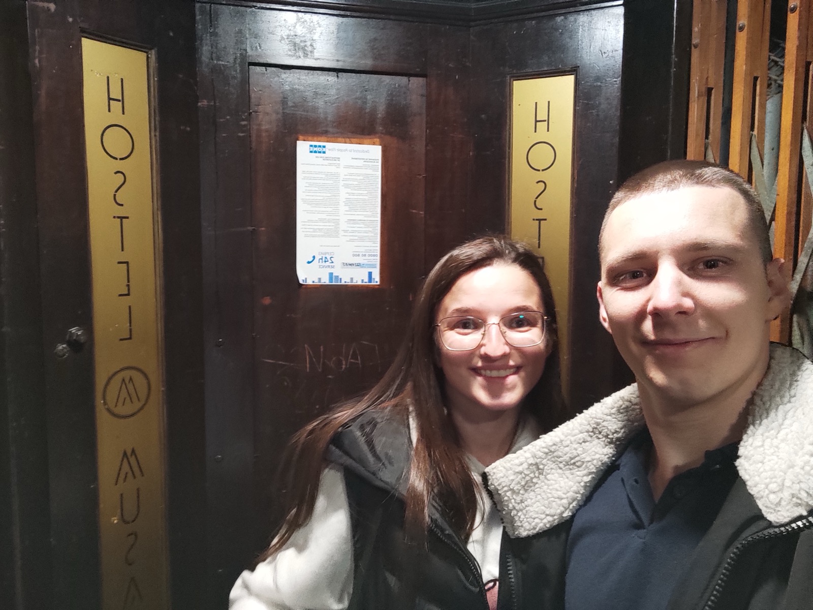
За малките моменти, които остават в сърцето задълго. Като стария асансьор в нашия хотел във Варна.
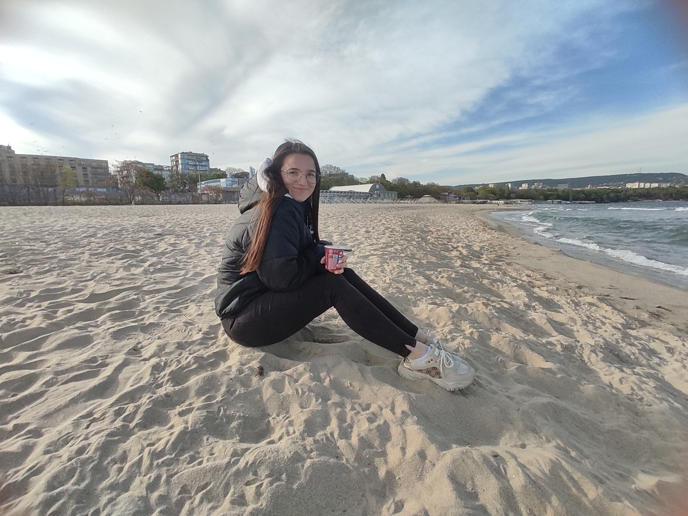
Обожавам спонтанните ни разходки. Дори когато сме на плажа в най-студения ден.
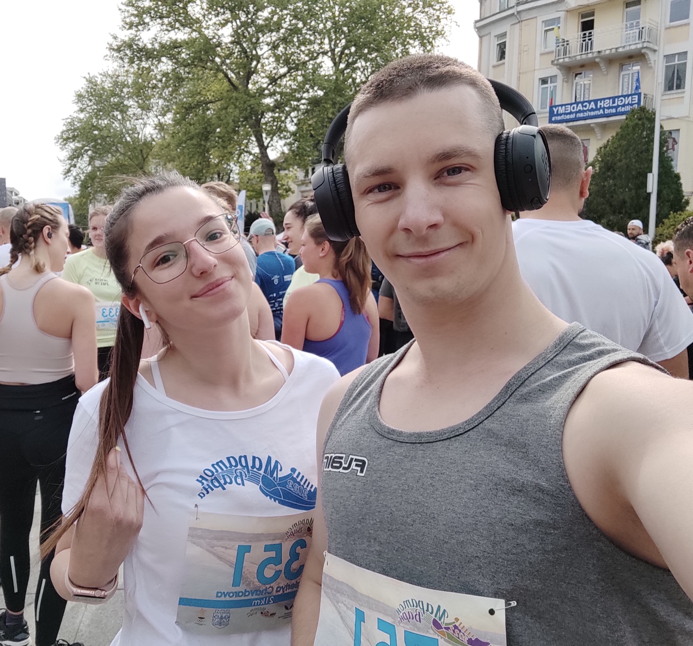
Обичам те, защото мечтаем и вървим към целите си заедно. Това са едни от най-скъпите ни мигове.
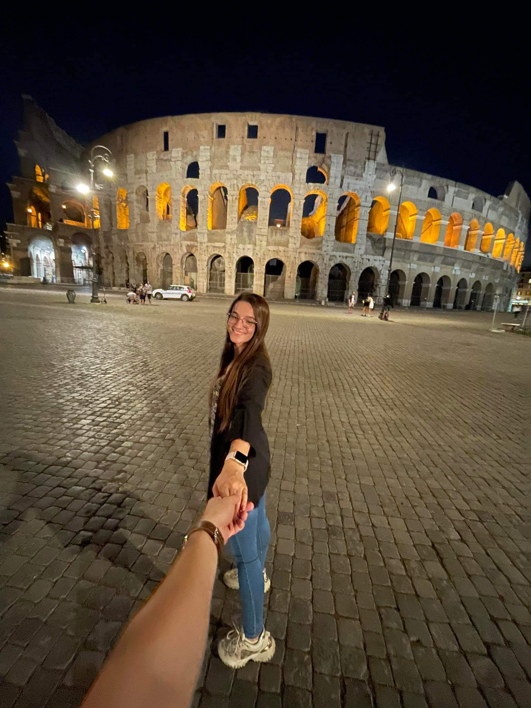
Когато обикаляме света заедно, по-скоро спринтираме, отколкото да крачим бавно. И не бих го заменил за нищо.
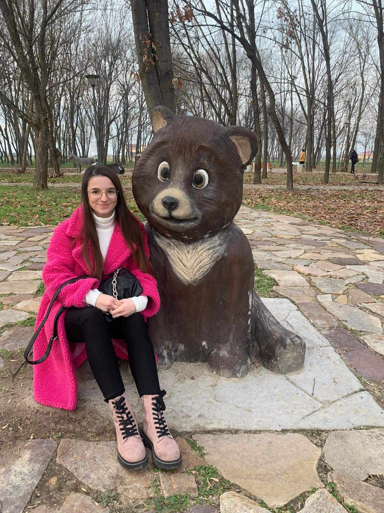
Ти си невероятно красива, колкото и да го отричаш. Имаш приказна красота, и ето, доказвам ти го тук и сега.
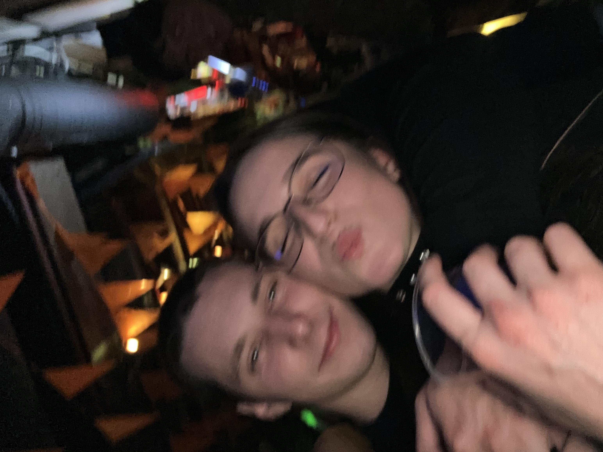
А, да... купоните! Обожавам ги, но твоето присъствие е това, което ги прави истински специални.
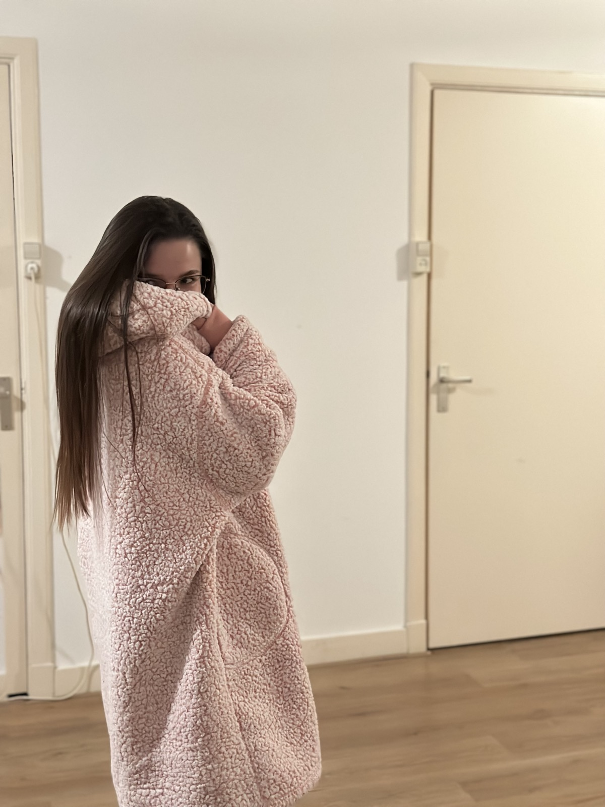
Обичам уюта, който носиш. Даряваш ми точно онова, от което един мъж има нужда след дълъг ден. Спокойствие, любов и топлина.
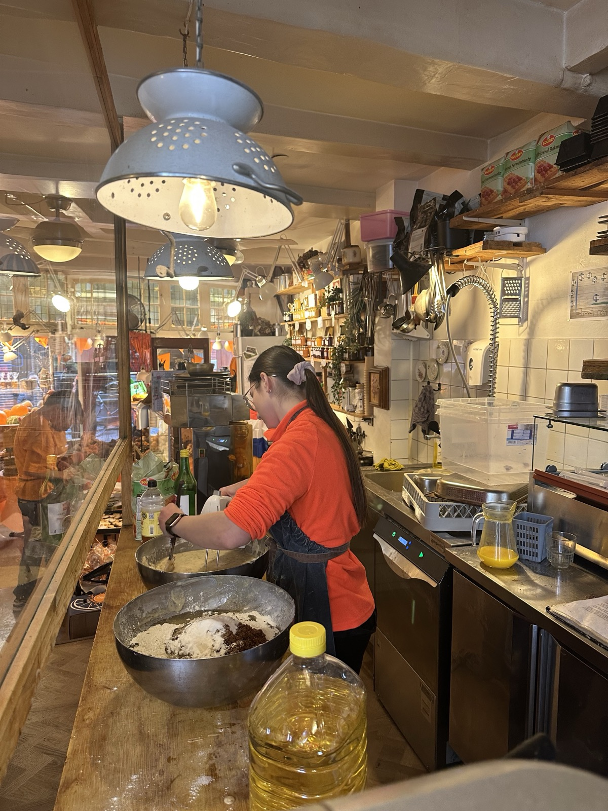
Ти си обичаща и борбена, сърцата и безкомпромисна, силна и отговорна. Ти си най-красивото мъниче на този свят.
Десет години до теб минаха като миг, а имам чувството, че едва сега започваме.
Благодаря ти, че си част от живота ми. Обичам те, сега и завинаги.
Натисни сърцето